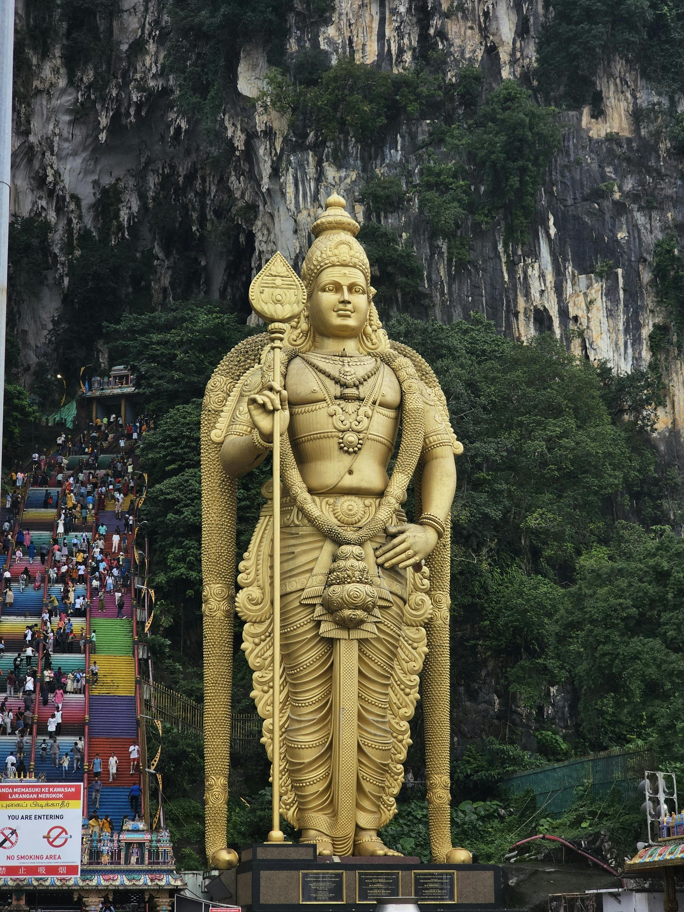
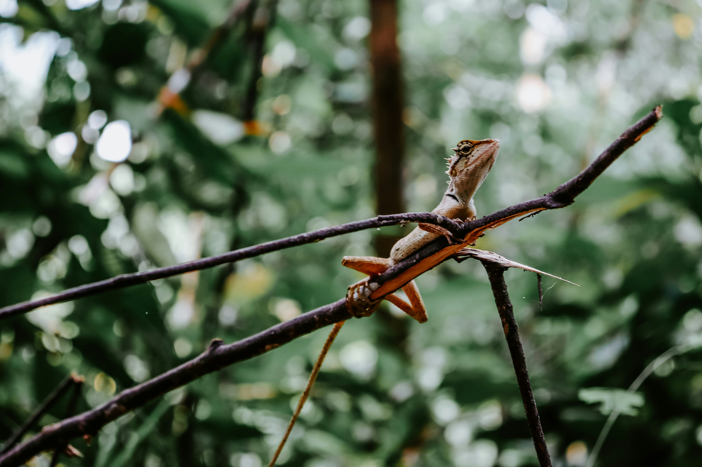
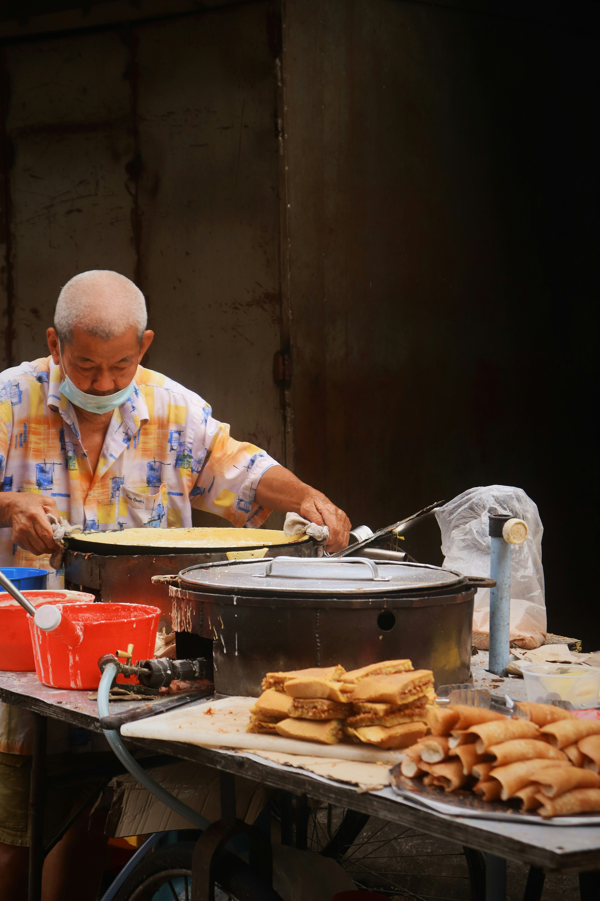

Yellowstone National Park

Mammoth Hot Springs has a number of actively forming Travertine terraces.
Photo Gallery


If you can handle the odor, the Yellowstone Sulphur Springs is a great place to hike.
Chiang Mai, Thailand

Chiang Mai, nestled in the lush hills of northern Thailand, is a city that captivates with its unique blend of cultural richness and natural beauty. Situated approximately 700 kilometers north of Bangkok, Chiang Mai is the largest city in the region and serves as the capital of the province of the same name. Its geographical location is nothing short of enchanting, surrounded by forested mountains and picturesque landscapes. This charming city, often referred to as the "Rose of the North," offers visitors a delightful escape from the bustling urban life, inviting them to explore a realm where tradition meets modernity amidst a backdrop of stunning scenery.
The heart of Chiang Mai beats with a rich history that dates back over 700 years. Founded in 1296, the city was originally the capital of the ancient Lanna Kingdom. Today, remnants of its storied past are scattered throughout the city, from the ancient temples that dot the landscape to the preserved city walls and moats that harken back to a bygone era. Among the city's treasures is the revered Wat Phra Singh, a 14th-century temple known for its intricate architecture and revered Buddha image. Chiang Mai's historical sites provide a captivating glimpse into its heritage, making it a destination that seamlessly weaves together the past and present for visitors to explore and appreciate.
Photo Gallery

You can see hot balloons in Chiang Mai as well.

You can see cute elephants in Chiang Mai! Isn't that fun?!

There are so many beautiful temples in Chiang Mai.

Be respectful to the monks.

And don’t forget to treat yourself with delicious Thai food!
Kuala Lumpur, Malaysia

Kuala Lumpur, capital of Malaysia. It is the country’s largest urban area and its cultural, commercial, and transportation centre. In 1972 Kuala Lumpur was designated a municipality, and in 1974 this entity and adjacent portions of surrounding Selangor state became a federal territory.
The capital of Malaysia is widely recognized for numerous landmarks, including Petronas Twin Towers (twin skyscrapers with a sky bridge and observation deck), the Petaling Street flea market, and Batu Caves, which is over 400 million years old.
Photo Gallery
Batu Caves is a limestone hill that has a series of caves and cave temples in Gombak, Selangor, Malaysia.
Malaysia is home to a wide range of insects.

Petaling Street is a Chinatown located in Kuala Lumpur, Malaysia.
Malaysia is known for its street food.